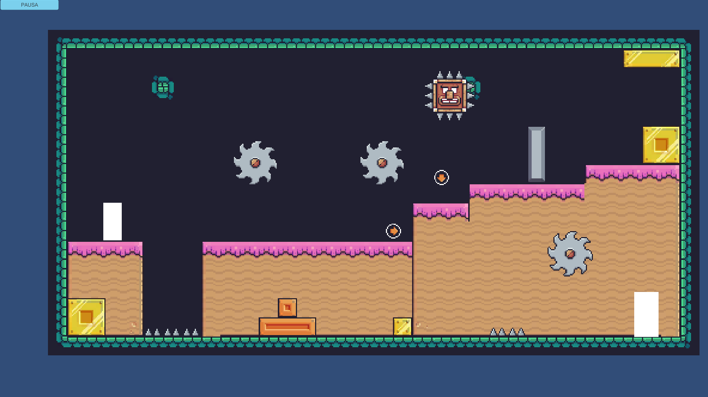
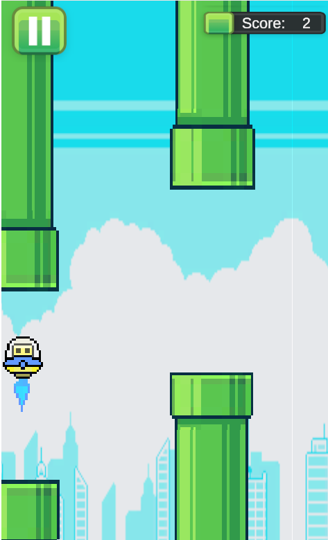
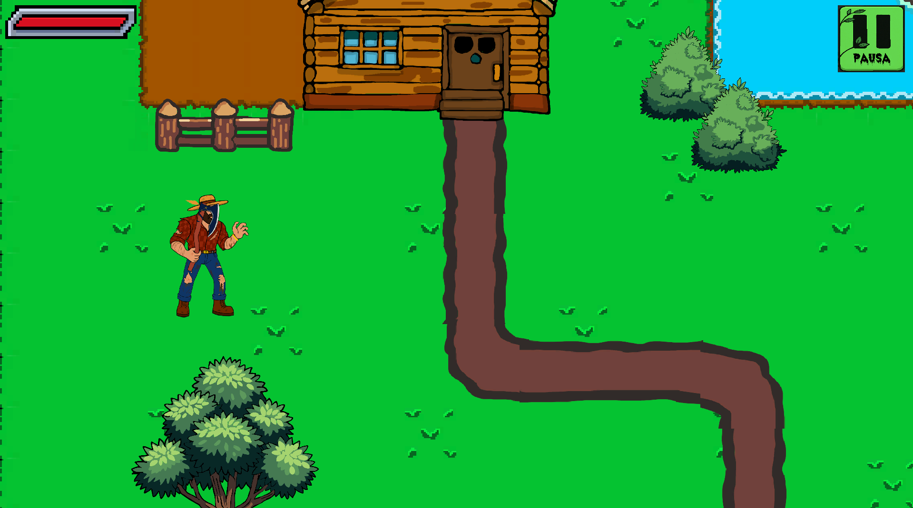
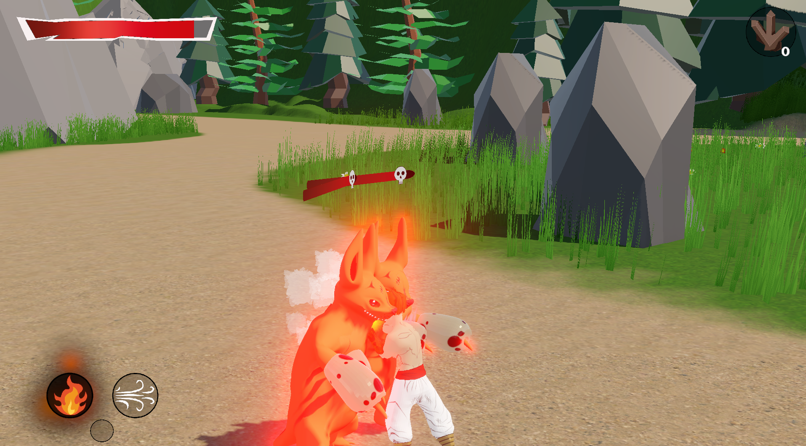

Construyo sistemas jugables, resuelvo problemas técnicos y desarrollo experiencias interactivas funcionales con foco en la arquitectura de código limpia y la optimización.

Movimiento, físicas y control de múltiples personajes.
Ver demo en itch.io →
Colisiones, gestión de obstáculos y sistema de reinicio.
Ver demo en itch.io →
Sistema de supervivencia e interacción con el entorno.
Ver demo en itch.io →
Movimiento de personaje, combate básico y estructura del juego.
Ver demo en itch.io →Soy desarrollador de videojuegos en formación con enfoque técnico en Unity y C#. Me interesa la resolución de problemas lógicos, el diseño de mecánicas sólidas y la creación de prototipos funcionales.
¿Tienes una oportunidad o vacante? Hablemos.
Email: erwinsalas1278@gmail.com